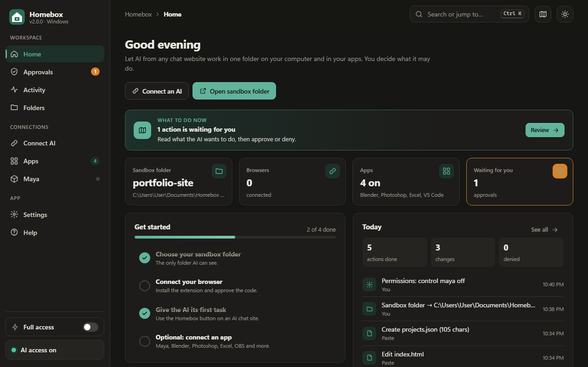
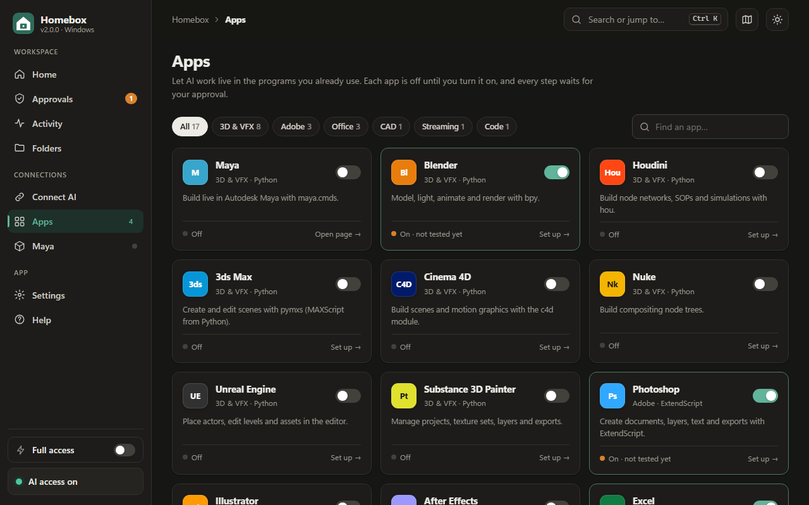

How to use Homebox
This guide covers everything from your first task to advanced settings. If you haven't installed Homebox yet, start with the download page.
1. The Homebox window

When Homebox is running, its control panel opens in your browser at http://127.0.0.1:7777. The first time, a short tour points out each part. You can replay it with the map button at the top right.
- Home shows a What to do now card with your next step, a status summary and today's activity.
- Approvals lists actions waiting for your OK.
- Activity is the full history, with Undo buttons.
- Folders is where you pick the sandbox folder.
- Connect AI has the extension download, connected browsers, MCP and paste mode.
- Apps turns on Maya, Blender, Photoshop, Excel, OBS and the others.
- Settings holds permissions, Full access, theme and notifications.
At the bottom of the sidebar are the two most important switches: Full access and the AI access pause button.
2. Your first task
- Open a new chatGo to ChatGPT, Claude, Gemini or another supported site and start a fresh conversation. On Arena, use Direct Chat.
- Click the round Homebox buttonIt sits at the bottom right of the page. Drag it up or down if it covers something. You can also press Alt+Shift+H.
- Type your task in box 1The panel has three numbered boxes. In box 1, type what you want, for example "Create a simple portfolio website". Or click one of the Ideas.
- Add pictures in box 2 (optional)Drag pictures or files into box 2, or paste a picture into box 1. Homebox saves them in your AI folder (in
picturesorfiles) and can also show the pictures to the AI. - Click Start taskBox 3. Ctrl+Enter also works.
- Let it runThe switch Let the AI keep working by itself (also called Auto-run) is on by default. Homebox runs each step and sends the results back until the AI says DONE.
Always start from the Homebox button, not the chat's own message box. The button sends the AI its instructions and tool list together with your task. If you type directly into the chat, the AI doesn't know Homebox exists and will just give you code to copy.
3. While the AI works
The Homebox panel on the chat page shows what is happening in real time:
- AI is working… on the round button means a step is running.
- Needs your OK means a step is waiting for you. The panel opens by itself and shows the code.
- Steps the AI wrote lists every step, with a Run button for any that haven't run.
- What Homebox sent back to the AI holds the last results. Use Put in chat box if a result ever fails to send.
Homebox stops by itself after 30 rounds (you can change the round limit in Settings, with advanced options shown) and whenever you press Stop the AI. Turn the switch off if you prefer to press Run on each step yourself.
4. Approvals and full access

By default the AI may read files on its own, but must ask before changing files. Commands and apps are off until you turn them on, and then every step asks first. Each approval card shows exactly what will be written or run.
If you trust a task and don't want to click Approve every time, turn on Full access in the sidebar or in Settings. From then on, everything you have turned on runs without asking, including anything already waiting. Things set to Off stay off. A banner reminds you that Full access is on, and one click turns it off.
Use Full access only with tasks you understand. Commands and app scripts can reach outside the sandbox folder. The safe middle ground is to leave commands off and allow only file changes.
5. Choosing a sandbox folder
The sandbox is the only folder the AI can see. It starts as Homebox Workspace in your user folder. On the Folders page, click Choose folder… or type a path to use a project folder instead. Keep several folders in the list and switch with one click. Homebox refuses your whole user folder and Windows system folders for safety.
6. Working in apps

Open the Apps page and click an app. Each one explains its own setup. Most take one step:
- 3D apps (Blender, Houdini, 3ds Max, Nuke, Unreal): paste one line into the app's Python console, or turn on Start automatically.
- Adobe and Office apps: just open the app. Homebox talks to it through Windows.
- OBS Studio: turn on the WebSocket server in OBS and paste its password into Homebox.
Click Test connection to check, then start a new chat so the AI learns about the app. There is a separate guide for each popular app in Guides.
7. Undo, pause and history
Every file change is backed up before it happens. On the Activity page, click Undo next to any change to put the old version back. In Maya, Blender, Houdini, 3ds Max, Nuke, Unreal, Word and AutoCAD, each AI step is also one normal undo step inside the app. Excel and PowerPoint can't undo script changes, so save your file first.
Press AI access on at the bottom of the sidebar (or Ctrl+Shift+P) to pause everything instantly. The full log is kept in .homebox\audit.jsonl in your user folder.
8. Other ways to connect
MCP apps. Claude Desktop, Cursor, VS Code and other MCP clients can connect to the private link on Connect AI → MCP apps. Keep the link secret. You can make a new one at any time.
Paste mode. Works with any chatbot. Copy the starter prompt into the chat and add your task. Paste the AI's reply into Connect AI → Paste a reply and click Run blocks, then copy the results back.
9. Tips for better results
- Describe the result you want, not the steps: "a landing page for my bakery with a menu section" works better than "write HTML".
- Start a new chat after changing permissions or turning on an app.
- For 3D work, remind the AI that it can't see the viewport, and tell it what looks wrong ("the arms are too long").
- Ask the AI to explain its plan first on big tasks. You can approve the plan before any files change.
- If the AI stops using Homebox, say: "Use homebox blocks, as in my first message."
10. Keyboard shortcuts
| Keys | What it does |
|---|---|
| Ctrl+K | Search pages, apps, settings and help |
| Ctrl+1 … 8 | Go to a page |
| Enter / Esc | Approve / deny the top request (Approvals page) |
| Ctrl+Shift+P | Pause or resume all AI access |
| Ctrl+Shift+L | Switch light / dark theme |
| F1 | Help |
| Alt+Shift+H | Show or hide the Homebox panel on a chat page |
Still stuck? See Troubleshooting or the FAQ.